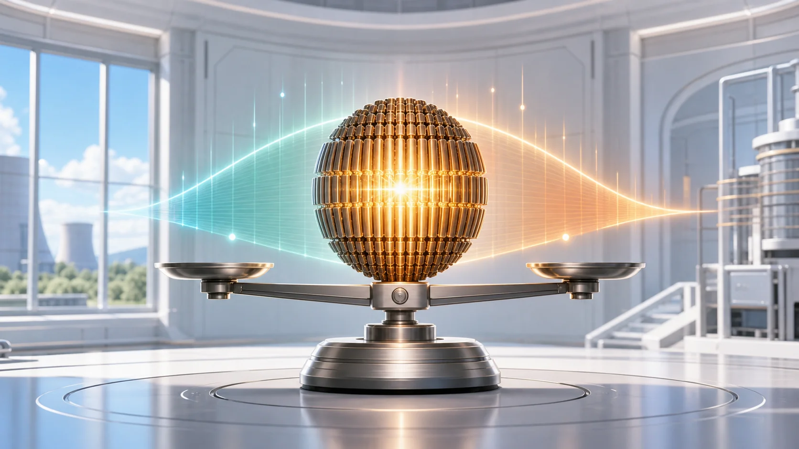
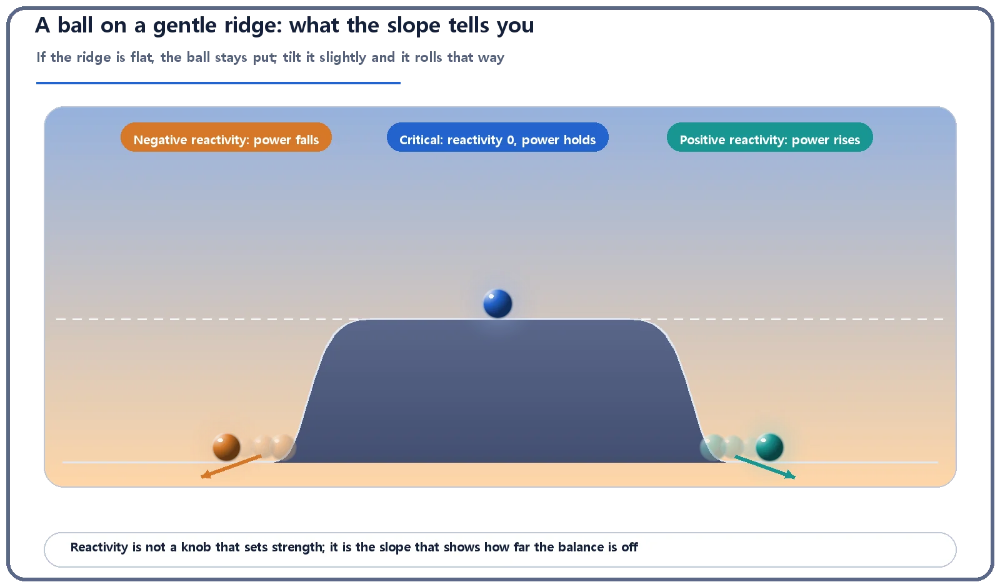
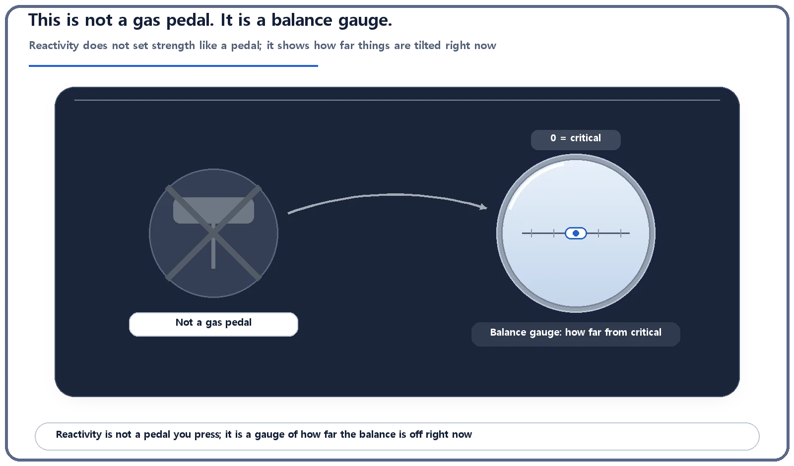

Reactor Kinetics & Reactivity · 101
Is It the Reactor's Gas Pedal? — What Reactivity Really Measures
A gas pedal sets strength where you hold it. Reactivity works like the tilt of a ridge: keep it tilted and power keeps changing.

Reactivity is not a knob that sets a reactor's power. It is a state value showing how far, and in which direction, the reactor has drifted from balance (criticality, k = 1), defined as ρ = (k − 1)/k. Hold it at a nonzero value and power keeps changing; to settle at a new level, reactivity must be brought back to zero.
Press harder, get more?
If you have read about nuclear power, you have probably met the word "reactivity." It sounds like a control you can push: press harder, get more. A car's gas pedal works that way. Press it, the engine works harder; hold your foot still, and the engine keeps delivering that same effort. Is reactivity the reactor's version of that pedal?
Short answer: no. Reactivity does not set the reactor's strength directly. It is a state value that tells you, at this moment, how far the reactor has drifted from balance. That difference matters, so let's unpack it.
Put a ball on a very gentle ridge
Imagine a ridge so nearly flat that you can't tell by eye whether it tilts at all, and place a ball on top.
If the ridge is perfectly flat, the ball stays put. If it tilts ever so slightly to one side, the ball starts rolling that way, and the steeper the tilt, the faster it goes. Tilt it the other way and the ball rolls the other way.
The tilt of the ridge is reactivity. Inside a reactor, fission creates neutrons (production), while absorption and leakage remove them (loss). When production and loss match exactly, the reactor is critical: that is the perfectly flat ridge. Reactivity is how far, and in which direction, that balance is tipped.
- Flat ridge (reactivity = 0, critical): the ball stays still, and reactor power holds steady
- Slight tilt one way (reactivity > 0): the ball rolls that way, and power gradually rises
- Slight tilt the other way (reactivity < 0): the ball rolls the other way, and power gradually falls

So why isn't it a gas pedal?
Back to the pedal. Where you hold it is how much effort you get: hold it halfway down and the engine keeps giving halfway effort. Position maps directly to strength.
Reactivity doesn't work like that. Suppose reactivity is held at some value other than zero. Power does not settle at a level matching that value. Instead, it keeps drifting in one direction, following the tilt. Keep the ridge tilted and the ball never stops rolling.
So if operators want to raise power and then hold it there, they have to bring reactivity back to about zero (critical) the moment the desired power is reached. It isn't "hold the pedal and the effort stays." It is "level the ridge again and the ball stops." That is why reactivity is not a gas pedal.

Then what actually turns the power up or down?
If reactivity isn't the knob, what is? The tools that change reactivity. The main ones are how deeply the control rods (rods made of material that absorbs neutrons well) are inserted into the core, and how much boron is dissolved in the coolant.
Pull a control rod out a little and there is less material soaking up neutrons, so the neutron balance tips slightly toward "production exceeds loss" and reactivity turns positive. Like a slight tilt in the ridge, power starts to climb. Once the target power is reached, the operator slides the rod back in a little to bring reactivity back near zero, and the reactor settles at the new power level.
In other words, the operator acts on physical controls such as control-rod position and boron concentration, and reactivity is the resulting state those actions produce. How much a given control rod (or a change in its insertion depth) shifts reactivity is a separate quantity called control rod worth, a topic for another day.
The one-line formula
Reactivity, written ρ (rho), is defined from the multiplication factor k, the number that tells you how many times larger each neutron generation is than the one before:
ρ = (k − 1) / k
In normal operation k is very close to 1, so ρ ≈ k − 1 is a perfectly practical approximation. The formula says one thing: reactivity expresses how far, and in which direction, k sits from 1 (critical, balance).
Reactivity is a pure ratio with no units. Because real values are often tiny decimals such as 0.001, it is common to express them in pcm (per cent mille, units of one hundred-thousandth). There is also a "dollars and cents" way of expressing reactivity, but it only makes full sense alongside another idea, the reactor period, so we'll just note that it exists.
| Reactivity | Multiplication factor | State | Power |
|---|---|---|---|
| ρ > 0 | k > 1 | Supercritical | Gradually rises |
| ρ = 0 | k = 1 | Critical | Holds steady (at any level) |
| ρ < 0 | k < 1 | Subcritical | Gradually falls |
Neighbors that are easy to mix up
Reactivity vs the multiplication factor k. They are different numbers. k tells you how many times the neutron population multiplies from one generation to the next; reactivity re-expresses how far that k is from 1. One is defined from the other.
Reactivity vs control rod worth. Rod worth says how much a particular action changes reactivity; reactivity is the state the core is in after all such actions add up. Think cause and effect.
Reactivity vs (electrical) power. This is the most important one: they are not the same thing. Reactivity is not the size of the power output. It is the state value that decides which way, and how fast, power is currently changing. With reactivity at exactly zero, power can sit steady at a low level or a high level. You cannot read "the reactor is at X percent power" from the sign or size of reactivity.
Where it shows up: design, operation, safety
Design. When fresh fuel is first loaded, the core is deliberately given extra reactivity (excess reactivity) to make up in advance for the reactivity that will be lost as the fuel is gradually used up (burnup). In the meantime that surplus is held down with control rods, burnable poisons and boric acid.
Operation. Raising power, lowering it, or holding it steady is, in practice, a continuous cycle of nudging reactivity in the desired direction and amount with control-rod position or boron concentration, then bringing it back near zero.
Safety. A situation where reactivity rises suddenly and unintentionally (a reactivity insertion event) is one of the accident categories that reactor safety analysis treats as important. A scram, the rapid shutdown of a reactor, drives the control rods in fully and very quickly to create a large, decisive negative reactivity that rapidly suppresses the chain reaction. The detailed scram sequence, and the temperature and void feedback by which a reactor pushes its own reactivity down, are beyond this article.
The takeaways
- Reactivity (ρ) is a state value showing how far, and in which direction, a reactor is from critical (balance, k = 1). It is defined as ρ = (k − 1)/k.
- It is not a pedal where holding a position holds a strength. Like the tilt of a ridge, a nonzero value keeps the state changing, so to stop at a chosen level you must bring reactivity back to zero.
- What operators actually move are physical controls such as control-rod position and boron concentration; reactivity simply shows the resulting state.
- Reactivity is distinct from the multiplication factor k, from control rod worth, and above all from power output itself.
Which way the ball rolls, and how fast, comes down to the tilt: the sign and size of reactivity. How quickly that tilt actually changes power is described by another concept, the reactor period.